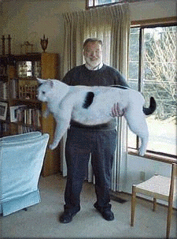

|
■2003/07/17/(Thu)11:37
スーツケースにつめこむもの
|

朝、私の自転車が倒れていました。
ダンゴ虫のジャングルジム状態になってました。
そんなわけでちょっぷりブルーモードな本日のわたくしです。
しかし、本気で旅行準備しなきゃいけないのに
なーーーーーーんにもしてません。
スーツケースには、前回の出張備品が入りっぱなしです。
というわけでまたしても準備しなきゃいけないメモ
---忘れたら大変なもの---
パスポート・お金・カード・ケータイ
--買い足ししなきゃいけないもの--
薬（バンソーコー・酔い止め・鎮痛剤・鼻炎役・胃腸薬）
ピルケース・マスク・化粧水入れ・アトマイザーティッシュ・ウェットティッシュ
パンツ1本、上着1枚、インナー2枚、猫雑誌
---用意しなきゃいけない---
パジャマ・スリッパ・デジカメ（本体、メディア、充電器）
洋服少々、下着3種、おしゃれ着1着、お菓子（500円まで）
靴、裁縫セット・サングラス、帽子、靴下。
あれ？なーんかまだある気がするけど…
コレ必要ヨ！とゆーものがあったら掲示板で教えてくださひ。
|
|
|